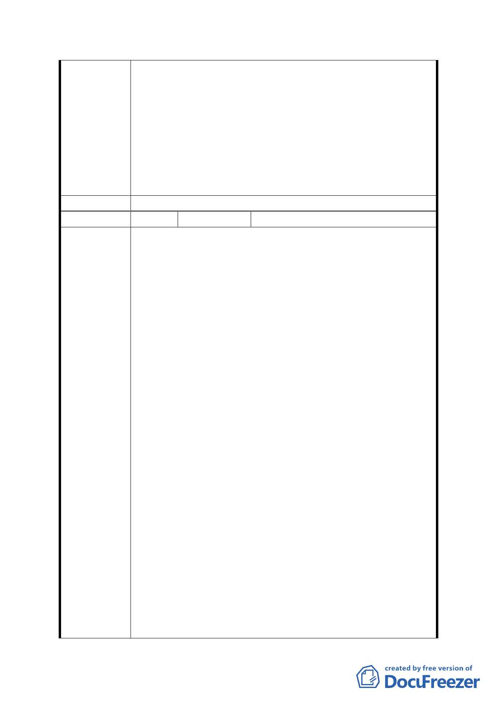

路與興德路口於 97 年曾積水 40cm、福興路積水 30cm
等。故於其上游設置滯洪池以節制部分逕流進入下游易積
水區域，屬於正確及有效治水方法。
4.本防洪調節池地面部分採公園化及兼顧環境生態設計，可
改善環境及增加里民休憩空間。地下池於非防汛期可積蓄
降水供澆灌、沖洗路面或提供消防用水使用。另文山區公
所亦有設置區民活動中心供里民集會、舉辦藝文活動及公
共事務之場地需求，本防洪調節池用地已配合預留相關空
間，供區公所設置區民活動中心。
委員會決議 同意依「市府修正後回應說明」辦理
編 號6
陳情人
林宏正（98.4.29）
主旨：申請撤銷 『變更臺北市辛亥國、高中用地主要計畫
案』，請查照！
說明：
一、本人之所有位於本市文山區公訓段七三及七七之一土
地於民國四十二年繼承，七十七年教育局藉興建辛亥
高中之名而藉法定程序強制剝奪人民受憲法保障之
財產權，於發放徵收補償費時，逕行扣除土地增值稅
新台幣八O三、九八九元。
二、民國八十六年十一月四日請求權人申請發還，卻要求
所支付價款需含先前逕行扣除之土地增值稅。
三、是故，在辛亥高中計畫案下，本人除喪失在徵收期間
土地使用權及土地增值稅外，且教育局在徵收期間怠
於行使管理人之責任，致使本地先後被文山區公所鋪
路柏油及因挖掘山坡地而興建擋土牆、公園處架設路
陳情理由
燈及停管處私設停車格線等妨礙所有權之工程，造成
目前雖回復所有權，卻無法有效行使管理使用權。
四、如今貴單位又依『變更臺北市辛亥國、高中用地主要
計畫案』廢除原學校用地計畫轉而興建不能增進當地
生活機能及附加價值之排水系統。
五、政府應保障人民之財產權此為憲法所明定，如今貴會
又自行依『變更臺北市辛亥國、高中用地主要計畫案』
逕行將原本單一使用分區「學校用地」變更為「道路
用地、排水溝用地、公園用地及保護區」等多個使用
分區；其中保護區竟占原面積高達近百分之八十。
六、該計畫中聲稱因坡度超過超過 30 ％土地，應變更為
保護區。然而，試問何以在學校用地計畫時無此規
劃？況且今日建築技術更勝當年。再者保護區是保護
何者？若為軍方營舍，則宜列入機關用地；若為水土
保持，則應列為護坡用地或公園用地，併同徵收。
- 20 -